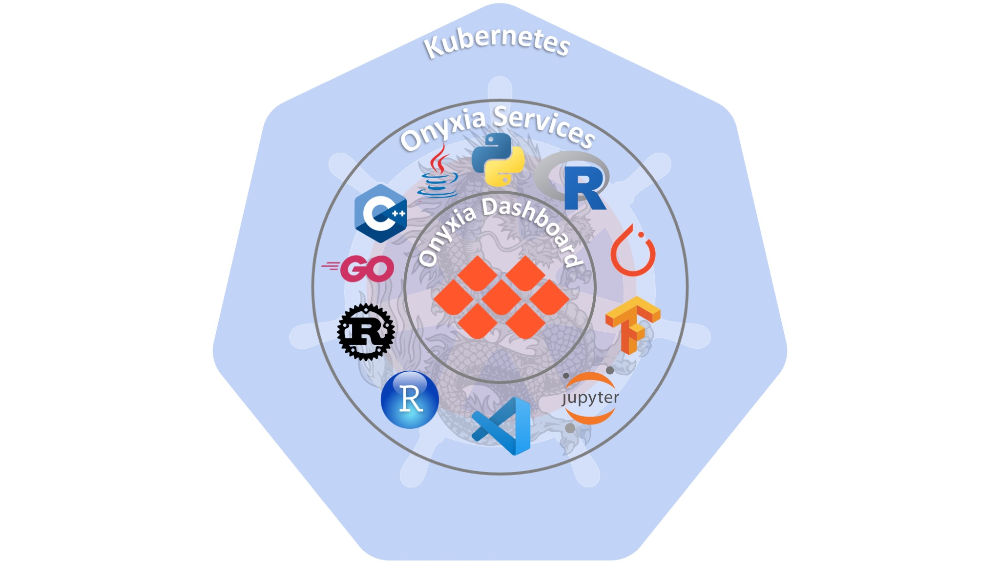

Environnements de développement à distance
Solutions existantes ? Présentation d'Onyxia
Mickaël BARON - Version 11-2025
 mickael-baron.fr
mickael-baron.frLicence d'utilisation
Creative Commons
Contrat Paternité
Partage des Conditions Initiales à l'Identique
2.0 France


Qui suis-je ?

Ingénieur de Recherche ☀️
- Recherche dans l'équipe Ingénierie des Données et des moDèles (IDD)
- Valorisation des plateformes logicielles
- « Coach technique » auprès des usagers


Ancien Responsable 🌑 (2011-2021)

 @Developpez
@Developpez- Rubriques : Java, Java Web, Android, Eclipse, Spring et Netbeans
- Rédacteurs de tutoriels
- Chiffres
- 4 M de visiteurs
- 12 M pages vues/mois
- 7500 membres
- 2000 forums
Objectif de la présentation (45 min)
- Contexte et problématiques
- Solutions existantes
- Onyxia
- Démonstration
- Fonctionnement
- Déploiement à l'ISAE-ENSMA
- Futures contributions
Contexte
Environnement de développement pour la recherche et la formation
Exigences attendues ?
- Compilateur (Javac)
- Éditeur (VSCode)
- Utilitaire (cURL)
- Données (fichiers, DB)
- Code source (Git)
- Matériel (GPU)
- Isolation (Conteneur)
- Customisation (Thème)
Problématiques
Limites du poste de travail ?
- Différentes versions des compilateurs
- LTS ou dernière version
- Nombreux éditeurs de code
- VSCode, Jupyter, PyCharm, Theia
- Différents métiers
- Dev. Web, Dev. Backend, Data Scientist
- Accès à du matériel spécifique
- ARM, GPU, capteurs/actionneurs
Problématiques : formation
- Besoin de remonter les besoins logiciels à la DSI
- Pas d'isolation
- Conflit avec les variables d'environnement
- Conflit avec les bibliothèques
- Reproduction difficile de son environnement de développement
- Perte du contexte d'édition et d'exécution
- Mobilité des usagers (formation par apprentissage)
Problématiques : recherche
- Utilisation de machines virtuelles (PaaS)
- Maintenir un OS
- Surdimensionné par rapport au besoin
- Partager des ressources matérielles
- GPU, capteurs/actionneurs
- Accès distants (OpenVPN)
- Manipuler SSH
- Conserver l'exécution NoHup/Screen
Environnements de développement à distance
🇬🇧 Remote Development Workspaces (RDW)
Recette pour un bon RDW ?
- Environnement de développement Web
- Image Docker pour la chaîne de compilation
- Générateur (Spawner) de conteneur
- Orchestrateur (Moteur de conteneur)
Solutions du marché 😱
Critères de choix ?
- Distribution : où sera déployée la solution ?
- SaaS ou en local (auto-hébergé)
- Coût 💰: fonctionnement/investissement ?
- Gratuit, Payant ou coût de l'infra.
- Extensible : ajouter des fonctionnalités ?
- Langages, outils, etc.
- EDI : interaction avec le code ?
- Web (VSCode), bureau (Eclipse), console (Vi)
- Autres critères : difficilement mesurables
- Communauté, doc., facilité installation
Critères de choix
| Solution | Distribution | Coût | Extensible | EDI |
|---|---|---|---|---|
| Cloud9 | SAAS | Amazon 💰 | Oui | Cloud9 IDE© |
| Coder | Local | Votre Cloud | Oui | Web et Bureau |
| CodeSpaces | SAAS | Github 💰 | Oui | Web |
| Gitlab | SAAS et Local | Gitlab 💰 | Oui | WebIDE© |
| Colab | SAAS | Google 💰 | Non | Jupyter Notebook© |
| JupyterHub | Local | Votre cloud | Non | Jupyter Notebook© |
| Onyxia | SAAS et Local | Votre cloud | Oui | Web |
| Che | Local | Votre cloud | Oui | Web |
Onyxia : origine
- Projet open source depuis 2020
- Porté par INSEE
- Site web : www.onyxia.sh
-
 /InseeFrLab/onyxia-web
/InseeFrLab/onyxia-web
-
 Slack Onyxia
Slack Onyxia
- Référencée sur le SILL1
- Découverte ? Conférence technique Devoxx 2023
Onyxia : principe
Onyxia : démonstration
Scénario de la démonstration
- Description du Dashboard
- Affichage des services Onyxia
- Création d'un service
- Accès au terminal Linux d'un service Onyxia
- Sous le capot avec k9s
Onyxia : fonctionnement

Onyxia : les instances référencées ?
- SSP Cloud : Cloud de l'INSEE (liste blanche EMAIL)
- Nubonyxia : Cloud Interministériel de la DGFip
- DATAFID : Expertise France
- Statistics Norway : Institut national de statistique 🇳🇴
- Genes : Groupe des écoles nationales d'économie et statistique
- Laboratoires de recherche, universités, entreprises ?
Onyxia : services disponibles
- Python, R, PyTorch, TenserFlow, Spark, etc.
- Postgres, Jena TDB, Neo4j, MariaDB, etc.
Automatisation Visualisation, etc.
Possibilité de créer ses propres services Onyxia
Déploiement à l'ISAE-ENSMA
Retour d'XP - enseignement
Mise en place
- URL de l'instance : onyxia-ia.ensma.fr
- Début d'installation : 26 août 2024
- Mise en prod : 8 octobre 2024
- Déploiement et customisation : ~ 1 mois
Enseignements dispensés
- Développement logiciel (Ada, C/C++ et Java) : 25 🧑🎓
- Base de la programmation (Python) : TBA (2026)
- Base de l'IA (sans GPU) : TBA
Retour d'XP - enseignement
Avantages
- Intégration du système d'authentification (CAS)
- Outils magiques pour les étudiants
- Simplicité pour créer ses propres services Onyxia
Inconvénients
- Pas de montage du stockage habituel des étudiants
- Hors périmètre de la DSI de l'ISAE-ENSMA
- Service Onyxia proposé par l'intance trop générique
Retour d'XP - recherche
Mise en place
- URL de l'instance : codelab.lias-lab.fr
- Mise en prod : février 2025
- Seconde instance Onyxia // avec l'enseignement
- Fournir des ressources GPU (besoin croissant)
Usages
- Utilisation de modèles d'IA générative
- Alternative aux machines virtuelles
- Exécutions longues sans perte de contexte
Retour d'XP - recherche
Avantages
- Accès aux ressources GPU contrôlées par rôles
- Libération auto des ressources (accaparement)
- Intégration transparente avec le dépôt Git
- Authentification par CAS et manuelle (extérieurs)
Inconvénients
- Pas forcément technique, mais organisationnelle
- Difficile de changer les habitudes d'usage
Limites de Onyxia
Limites des solutions de type RDW2
Spécificités des enseignements de l'ISAE-ENSMA
- Systèmes embarqués : carte Arduino
- Développement client lourd
Pas de mécanisme de libération de ressources (cron)
Gestion des ressources critiques (ex: GPU)
Compétences en Kubernetes
Conclusion
- Onyxia
- Dashboard (sans état)
- Services (ex : Python + VScode)
- Services disponibles en local ou sur une VM
- Mise en place progressive de Onyxia
- Contributions au projet Onyxia
- Nouveaux services (Ada, Java)
- Remontés de bugs, PR et fonctionnalités
- Rédaction d'articles
- Présentation de vulgarisation : ISAE-ENSMA, UP
Remerciements
L'équipe INSEE : Frédéric Comte, Joseph Garrone et Olivier Levitt pour l'assistance à la mise en place de l'instance Onyxia
L'équipe de la DSI de l'ISAE-ENSMA pour l'intégration de l'instance Onyxia
Les collègues du département Informatique et Automatique de l'ISAE-ENSMA pour leur implication